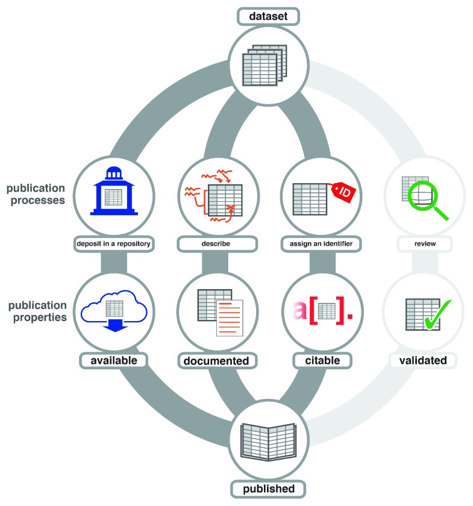

Publishing research data allows others to access and use your data. Writing a manuscript can consume a lot of time. Some researchers might find this process tedious if they only want to publish certain data, which they considered as interesting or impactful during and after collection. Data publishing is an integral part of the open science movement. In general, the main goal of data publishing is to evolve data to first class research outputs, driven by a number of initiatives. This enables datasets to be cited similarly to other research publication types, such as articles or books, enabling producers of datasets to gain academic credit for their work.
The motivations for publishing data may range from a desire to make research more accessible, making datasets citable, or research funders or publishers require open data publishing. Some scientists might argue that they would feel uncomfortable about publishing their dataset, as it could allow people to use their work from the web and extract novelties out of it. However, most print-based science journals are available online nowadays, so the potential of exploiting is already present. Additionally, solutions to preserve privacy within data publishing has been proposed, including privacy protection algorithms, data ”masking” methods, and regional privacy level calculation algorithm. In general, the advantages of data publications prevail. Here is a list of some potential benefits you might get from publishing your dataset:
There are a several criteria to consider during publication of your dataset:

Figure 1: During publication, datasets are typically deposited in a repository to make them available, documented to support reproduction and reuse, and assigned an identifier to facilitate citation. Some, but not all, publishers review datasets to validate them.
Data papers or data articles are “scholarly publications of a searchable metadata document describing a particular on-line accessible dataset, or a group of datasets, published in accordance to the standard academic practices”. The intent of a data paper is to offer a descriptive information on the related dataset(s) focusing on data collection and distinguishing features, rather than on data processing and analysis. Thereby, their aim is answering questions like “What data was published?”, “How was the data collected?”, or “Who collected the data?”. As data papers are considered academic publications, just as other types of papers, they allow scientists sharing data to receive credit and thus, upgrading the value of data sharing. This provides not only an additional incentive to share data, but also increases metadata quality and reusability of the shared data.
Data papers are supported by a variety of journals, of which some are “true” data journals, i.e. they are dedicated to publishing data papers only, while the majority are mixed journals meaning they publish a number of article types, including data papers. A comprehensive list of data journals for different domains can be found here
The following table gives an overview about DataPLANT tools and services supporting you in data publishing. Follow the link in the first column for details.
| Name | Type | Tasks on metadata |
|---|---|---|
| ARC (Annotated Research Context) |
Standard | Structure:
|
| Swate (Swate Workflow Annotation Tool for Excel) |
Tool | Collect and structure:
|
| ArcCommander | Tool | Collect, structure and share:
|
| DataHUB | Service | Share:
|
| Invenio | Service under construction | Share:
|
| Metadata registry | Service under construction | Share:
|
| Converters | Tool under construction | Curate:
|
Besides these technical solutions, DataPLANT supports you with community-engaged data stewardship. For further assistance, feel free to reach out via our helpdesk or by contacting us directly.